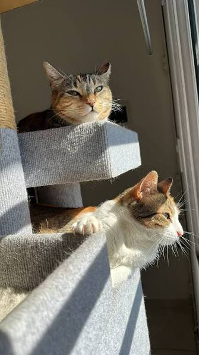
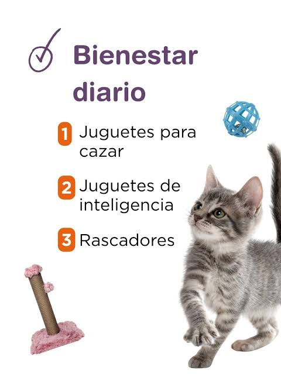
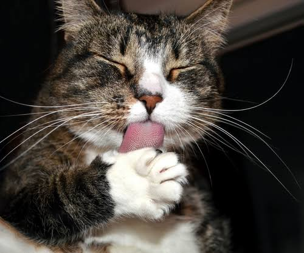
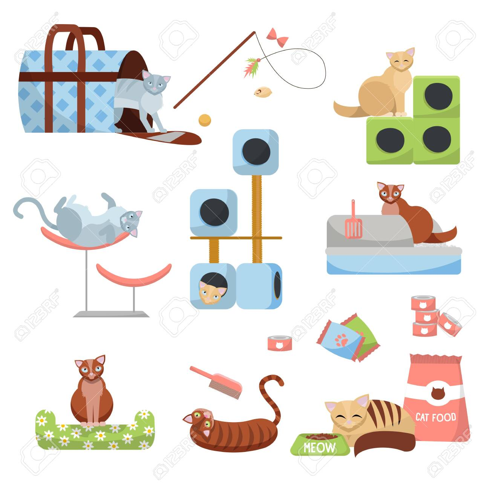
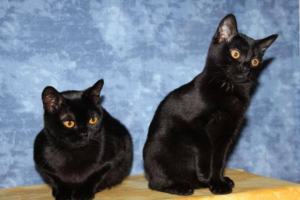
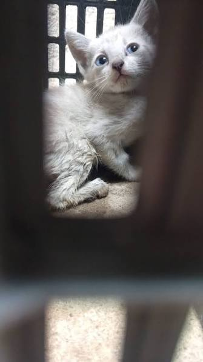
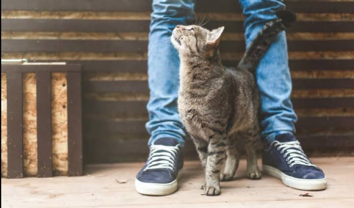
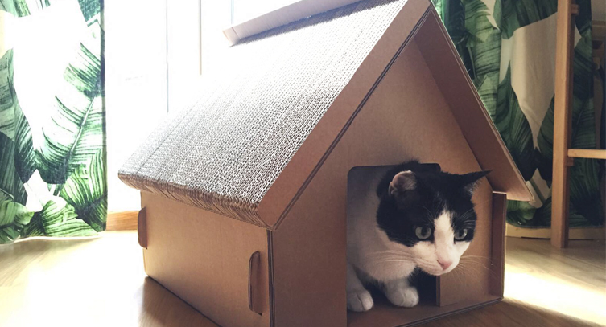
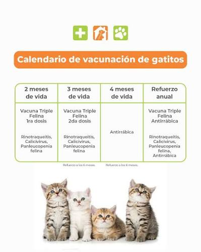
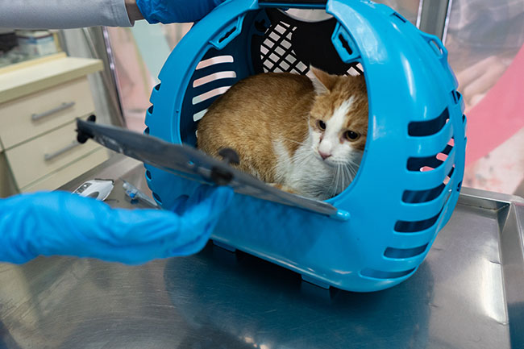

Compartir la vida con un gato aporta enormes ventajas para la salud física y mental de las personas.
Estudios científicos demuestran que el ronroneo de un gato ayuda a reducir el estrés, disminuir la ansiedad y mejorar el estado de ánimo.
Los gatos son compañeros fieles, curiosos y afectuosos. Aunque muchas personas creen que son animales independientes, suelen acompañar constantemente a sus dueños.
Por esa razón si tienes pensado adoptar o ya tienes una mascota ten en cuenta que los gatos necesitan alimentos específicos, vacunas, visitas al veterinario, rutinas de limpieza y aseo, tiempo de convivencia; incluso al querer corregir sus comportamientos debes hacerlo sin golpes o sin castigos porque los gatos no entienden los porqués de tus acciones agresivas. Ahora veras las diferentes acciones que tu gato necesita. Haz conciencia y también ten en cuenta que, los gatos negros no deben ser sacrificados, no atraen mala suerte
Los animales son seres vivos con derecho a la vida y al bienestar; su sufrimiento no tiene justificación.
Las creencias que relacionan colores o comportamientos con mala suerte, magia negra o rituales carecen de base científica y ética
Sacrificar gatos por superstición es un delito de maltrato animal y puede traerte consecuencias legales.
Los beneficiarios de rituales que implican daño a animales no reciben efectos positivos reales; en cambio, siembran sufrimiento y perpetúan violencia
Adoptar prácticas de respeto y empatía hacia los animales genera bienestar real y positivo en la comunidad y fortalece una cultura de cuidado y responsabilidad









